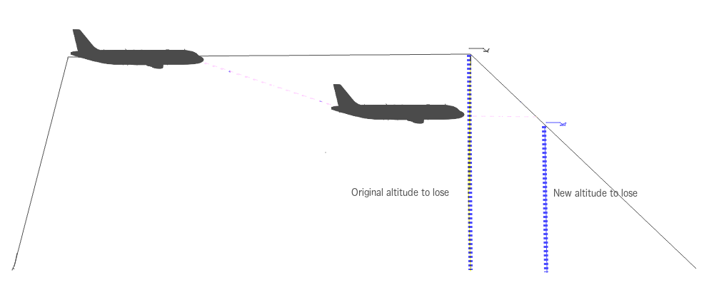

Descent Management and the FMGS
The FMGC minimizes cost by optimizing speed. The optimization function computes the following items:
- Takeoff, approach, and go-around speeds (F, S, Greendot, and VAPP)
- An optimum target speed for CLB and DES phases (ECON CLB/DES SPD)
- An optimum target Mach number for CRZ phase (CRZ MACH)
- An optimum Flight Level, for information purposes
- An optimum descent profile from CRZ FL down to the destination airport
That last bullet can often trip us up when we're trying to manage our descent using the cues from the FMGC and by extension, our Primary Flight Display. That last bullet can often trip us up when we're trying to manage our descent using the cues from the FMGC and by extension, our Primary Flight Display. This is because the FMGC-computed top of descent (TOD) and our actual top of descent rarely coincide. Air Traffic Control can and often does descend us early, or late, for myriad reasons. These include avoiding traffic conflicts, managing traffic flow into the terminal area, and other everyday ATC stuff. Sometimes they’ll even give us a late climb above our cruise altitude, before beginning our final descent. All of these early and/or late starts into the descent phase mean trouble for us as pilots, until we understand that the computed TOD arrow on your PFD is not updated without pilot input.
Consider the following graphic:

The dotted blue lines represent the amount of altitude the aircraft has to lose in order to land. The first one, the one labeled "Original altitude to lose", is the altitude that the FMGS uses when it initially calculates the descent profile. The second dotted line, labeled "New altitude to lose", represents the amount of altitude required to descend for landing AFTER a descent has been issued to some intermediate altitude below the aircraft's cruise flight level. Intuitively, we know that the top of descent is will occur later in the flight if we have less altitude to lose. In other words, with less altitude to lose in order to land, the total descent will take less time, and we can therefore stay at cruise longer.
But when ATC clears us to an intermediate cruise altitude ahead of our FMGS-computed top of descent (and this happens more often than not), our TOD must be adjusted. The FMGS will not recalculate it without some help from you. Now, hopefully you’re doing some mental math as a backup to the visual cues provided on the pfd (if you aren’t, you should be), but if you're like me, you rely on that magenta TOD arrow maybe a little too much. It’s fine to use it as an aid to your descent planning but if you typically base your decision to descend on your proximity to that bent arrow, just know that it can lead you down the primrose path. In most cases, following its guidance will cause you to descend early if you don't do something to make the FMGS recalculate the profile, resulting in wasted fuel, wasted time, or both (plus it just makes you look bad!).